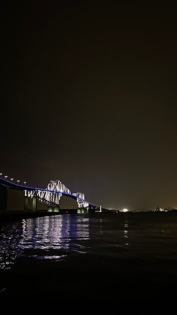
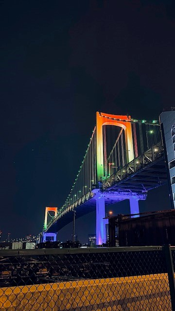

自分の趣味
私の趣味は、ドライブをすることです。特に夜の都心部の街を走ることが最高です。夜の東京の街はとても明るく車から見える 景色はまるでイルミネーションをずっと見ているかのような感覚になります。もともと運転がすきなため両方楽しめるこの趣味 は自分にとって最高です。最近は、目的地を決めてきれいな夜景を撮りに行きます。
 この写真のように自分で撮って満足しています。またそのほかにもドライブの様子を動画で撮影することも同様に最高です。ス マホのタイムラプス機能を使うと面白い映像が撮れます。
この趣味は今後も続けていき、自分のライブラリを増やしていきたいと思います。